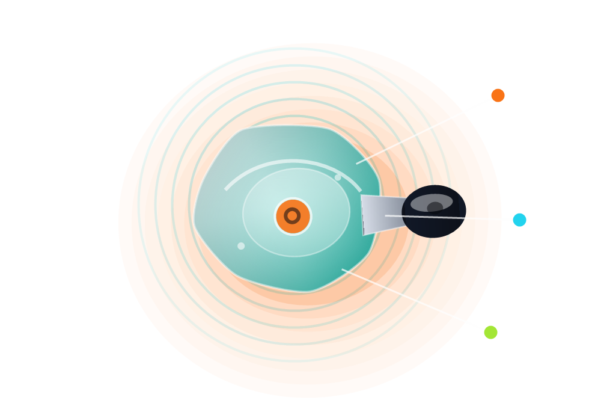

Hybrid driver array
Dynamic drivers handle physical bass while balanced armatures keep vocals and micro-detail focused.
Inside Dixon
The Dixon system is designed around a simple idea: the monitor should disappear when the music starts. That means stable fit, controlled air pressure, clean tuning, and cables that can be swapped instead of thrown away.

Dynamic drivers handle physical bass while balanced armatures keep vocals and micro-detail focused.
Angled acoustic channels guide treble cleanly into the ear canal without making the fit feel sharp.
Micro vents reduce sealed-ear fatigue while preserving the passive isolation Dixon users expect.
Small hardware choices add up fast when the product lives in your ears for hours.
Layered transparent resin gives every Dixon pair a polished, luminous look while keeping the body lightweight.
Swap from standard 3.5 mm to balanced cables, wireless adapters, or replacement braids when the setup changes.
Color-coded filters gently shift the upper mids and treble, making one IEM useful across more listening styles.
Silicone, memory foam, and wide-bore tips help users tune comfort, isolation, and brightness.
Soft jackets reduce cable noise while walking, tracking vocals, or moving on stage.
Deep-seal shells lower outside bleed, so performers can monitor at safer volumes.